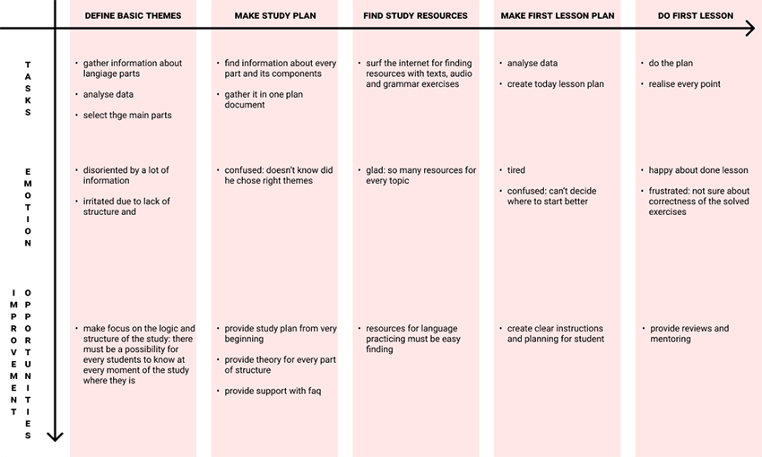

Here key skills: sitemap, coding, brand identity
the product :
the problem :
the goal :
my role :
user research : summary
Users want to customize their training by time, money and the presence of a teacher.
user research : pain points
process :
time :
finances :
persona : meet andrey
Andrey gives a lot of time to work and wants to spend the rest selectively.
user journey map
Goal: conduct first language lesson by their own.
sitemap
The map is built on a combination of hierarchical and sequential structure of construction.
paper wireframes
During sketching process mobile flow was defined first. Design based on future responsive behaviour.
digital wireframes
Wireframes based on a ‘Progressive enhancement ‘ approach (reason of the choice: users’ pain point - time). According to the approach, the navigation view of the menu and footer expands in the transition to the desktop version of the site.
The main elements are arranged according to the width of the viewport.
low-fidelity prototype
Two flows were created (mobile and desktop): pages ‘home’ and ‘about’ made for product presentation and service descriptions. Pages ‘theory’ and ‘dosed’ as the main resources for studying. Interaction across the entire site has intuitive elements: a hamburger menu for the mobile version, a basic carousel for an array with videos and call-to-actions buttons. All visual clutter was reduced.
Both prototypes have a single structure only with a change in navigation.
Watch low-fidelity ptototypestyle board
Created to define the main style direction.
font and color system
Colors were built based on style board: brown warm colors give association with books and studying. Fonts were chosen with both - Latin and Cyrillic support.
sticker sheet
was created for future mockups based on the style board.
grid system
There were several grid systems - here one of them.
mockups
Using wireframe screens and style system mockups were created.
The design is created in a minimalistic style to keep the user's attention on the main stream:. The home page leads through the basic history of the project, giving the user a choice at the end: to continue acquaintance with the project or to start using the product.
For heading - english language's used (user's target language) with background translation.
accessibility considerations
- Mobile version users have the same informational experience as desktop users;
- Design is simple and clear: clutter’s reduced;
- Buttons have wide tap-area;
- Colors with low brightness rate have decorative function only.
email mockups
Were created as confirmation and instructions for students. Сreated using the design system.
brand identity
The visual experience is constant from element to element. The company's voice combines academic clarity and friendliness.
Code writing
Coding’s based on the mockups and prototypes with Gulp and atomic approach.
Watch it on GitHubtakeaways
impact :
one quote from peer feedback :
I like clear explanations about the steps in learning. It's like I have instructions and tools in my hands right away. And it has such pleasant visual vibes!
my reflexing :
that's all for now;)
watch this project on: